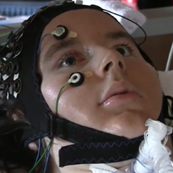
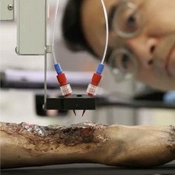

Aujourd'hui, les technologies évoluent de jours en jours. Elles ont de multiples bénéfices dans différents domaines, elle permettent de gagner du temps, d'augmenter les rendements, de remplacer des tâches physiquement demandantes... Il est donc naturel qu'on ai envisagé de se servir de la technologie pour sauver des vies, la mort étant une des préoccupations premières de notre espèce.
Dans le domaine de la médecine, les technologies ne cessent de repousser les limites de ce que nous croyons possible, ce qui nous amène à de nouvelles espérances, comme soigner des maladies innées, refaire marcher des gens paralysés
Nous vous proposons 3 technologies médicales qui s’adressent à des problèmes de santé courants
|  |  |
La première invention est un ordinateur permettant d'assister un chirurgien dans des opérations complexes. La deuxième est destinée aux personnes paralysées, et permet d'établir un semblant de communication avec eux. Enfin, la troisième permet de porter secours aux grand brulés notamment.
Soyez attentif, un questionnaire sera disponible à la fin de votre lecture pour tester votre compréhension de ces technologies. Bonne Lecture !